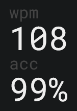

Learning Touch Typing
I've been learning to touch type for a while now. I got my computer only a year ago and had never bothered to learn to type properly. I then realised the necessity of touch typing when I was trying to learn to use Vim.
There are many websites you can visit to practise, but my preference was the Monkeytype website, which I found the most beautifully designed user interface. I practiced touch typing for 20-30 minutes every day. However, you should remember that the aim here is not to write fast but to write correctly. The former is the result of the latter. I'm happy with the accuracy I have at my current speed, so I'm going to take a break from practicing and focus on writing meaningful things.
